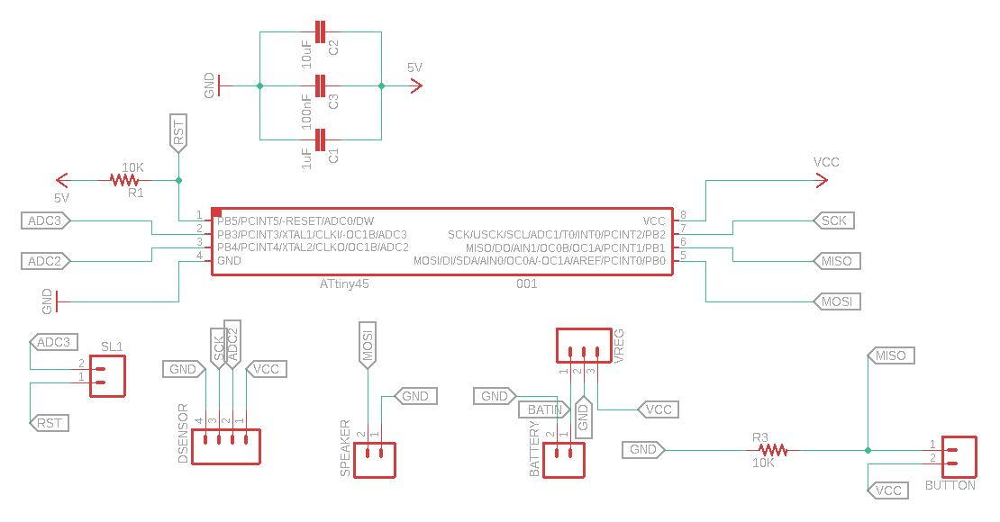
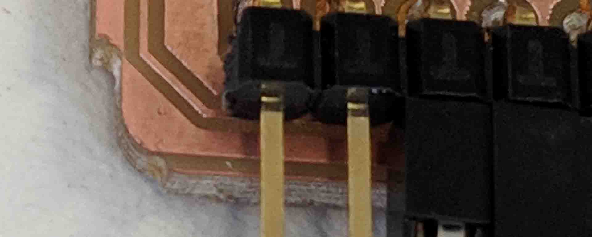
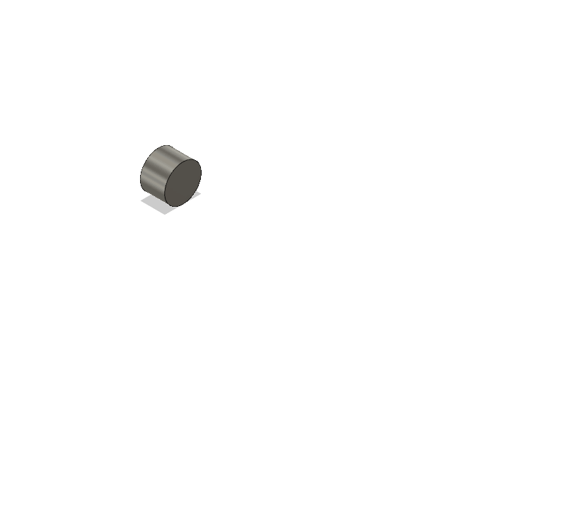
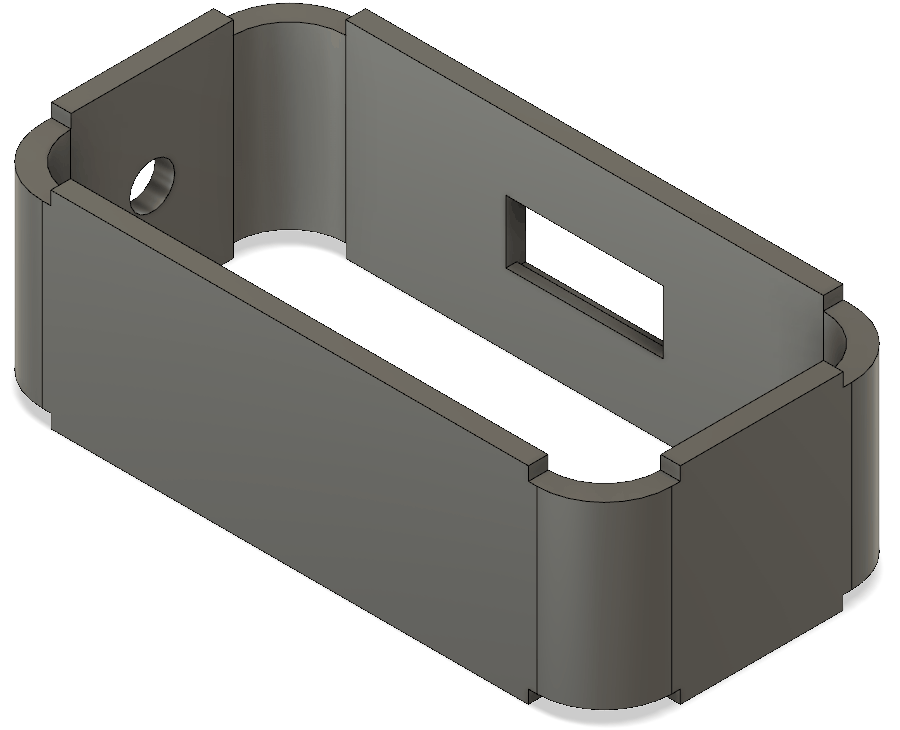
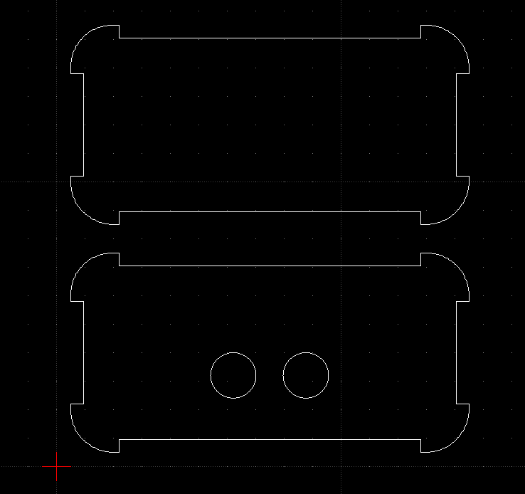
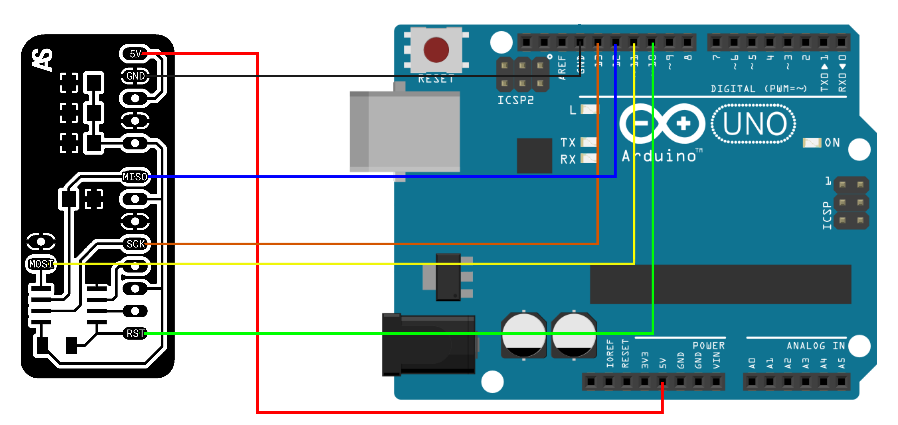
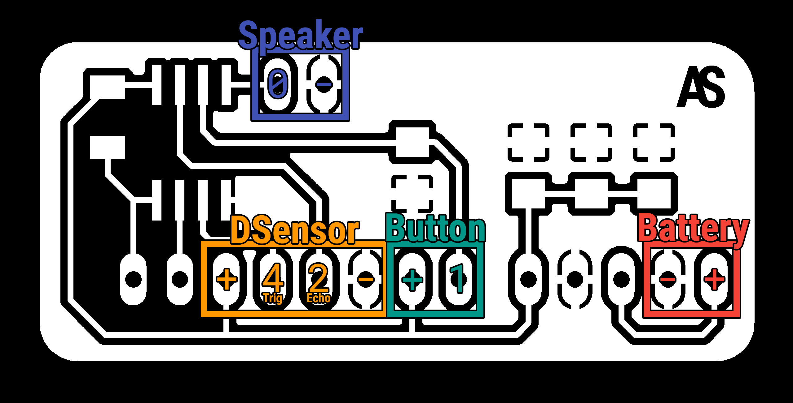

Final Project
Thinking of Ideas
Figuring out what to do for my final project was very hard for me. I wasn't sure what I was capable of and what the Fablab allowed me to accomplish.
Here are some ideas I put in my Google Keep from time to time:
- The 3D LED Cube looks pretty cool but has no real function so I scrapped that idea.
- A Nixie Tube Clock looks super awesome, but the nixie tubes are pretty expensive sadly.
- The Idea of a Jukebox that actually mechanically grabs CDs from a holder and puts them on a CD-Reader sounds cool to me but I don't think that I could have ever make something like this in the busy semester I had.
- The Idea of a 8x8 Pixel Matrix stuck around for a little longer, I even laser cut a holder for the 8x8 Matrix from Sparkfun. The thing is that Mr. Ingrassia advised against the SD card reader since it and the LED Matrix both use SPI and that would get too complicated. I then tried to think of different input devices to use but it really doesn't make sense without the SD card reader in my mind.
- Finally I got the idea of a drawer alarm.
I'm thinking of a box with a button, speaker and a distance sensor. When you press the button it sets the distance and if the distance gets further than is set the speaker will play a loud tone. You can put this device in a drawer and set the distance using the button, so when someone snoops around in your room and opens the drawer the distance sensor will notice the change and an alarm will go of.
This Idea has several advantages. I can use my modified hello board to test and write software since it has enough pins for all these devices. It also has the advantage of being actually useful as a product.
Writing some code to test the idea
A few days after thinking of the idea I grabbed all the parts and tested them all individually.
After verifying that they all work I wrote this program:
finalProject.ino
// Pocket Alarm v0.1
// Written by Antonio Sarcevic
// WTFPL License
// Pins
int trigger = 4;
int echo = 2;
int speaker = 0;
int button = 1;
// Variables
long duration = 0;
long distance = 0;
long setDistance = 0;
void setup() {
// Pin Modes
pinMode(trigger, OUTPUT);
pinMode(echo, INPUT);
pinMode(button, INPUT);
}
void loop() {
// Send out a ultra sonic wave and read the duration
digitalWrite(trigger, LOW);
delay(5);
digitalWrite(trigger, HIGH);
delay(10);
digitalWrite(trigger, LOW);
duration = pulseIn(echo, HIGH);
// Calculate Distance
distance = (duration/2) * 0.03432;
if(distance >= 500 || distance <= 0){
tone(speaker, 31);
}
if(digitalRead(button) == LOW){
setDistance = distance;
tone(speaker, 2637, 83);
}
if((distance >= setDistance+10) && (setDistance != 0)){
tone(speaker, 4000);
}else{
noTone(speaker);
}
delay(1000);
}
Note: This code still lacks the correct function of the button. I need to put in a delay for the button so that when you press it you can close the drawer properly.
I tested it using my hand to simulate different distances. And it works very well: pressing the button sets the desired distance. After leaving the button and rasing my hand it plays a tone!
Go get the speaker to work with tone() I used this core and I described how I got it to work in my Week 9 Documentation.
I used the Week 9 Documentation of Philipp Zelle as a reference to get the distance sensor to work.
Project cost
For the project I need the following parts:
- PCB / AtTiny45: 0,91€
- Distance Sensor / HC-SR04: 0,89€
- Speaker / GC0351NX: (did not find a price online)
- Button / 125V3A: 0,25€
- 9V Battery: 0,15€
- 9V Battery Holder: 1,30€
So all together with 3D print and Laser Cut MDF I would say it comes round at about 4-5€.
Designing a minimal board
I decided to use the ATTiny45 again. I don't require any Serial and have bought myself an ELEGOO UNO R3 board to program at home. I also have experience with the ATTiny45 so it just felt right.
I noted what Pins are going to used for what and how many GND and VCCs im going to need.
ATtiny45:
6 programmable Pins:
- 0 / MOSI -> Speaker
- 1 / MISO -> Button
- 2 / SCK -> Echo
- 4 -> Trigger
- 3
- 5
GND x3
VCC x3
Distance Sensor:
4 Pins:
- Trigger -> 4
- Echo -> 2
- VCC
- GND
Speaker:
2 Pins:
- Output -> 0
- GND
Button:
2 Pins:
- VCC
- GND
+ Input w/Resistor -> 1
Battery:
2 Pins:
- VCC
- GND
+ Voltage Regulator
I went and opened the hello board and saved it as a seperate project.
First I got rid of the LED since I didn't need it.
Then I added fitting pins for every component. 4 pins for the distance sensor, 2 pins for the speaker, 2 pins and a resistor for the button and two pins for the battery with fitting pins for the voltage regulator.
I connected the pin headers to the right pin from the ATTiny45. I also added a pin header for the leftover pin and the reset pin.
This is the schematic I ended up with:

After being done with the schematic I went ahead and started designing the board.
After 2 attempts I ended up with this small, minimal board:

For a more detailed description on how the process of how electronics design works look into my Week 6 documentation.
Producing the Board
Milling the board was a big hassle.
I never had a problem with the CNC machine in the past but this time it was not really doing what I wanted it to. I hat to do about 6 or 7 runs for the board to be optimal and at the end I even cut into the board because I went too deep with the outside.rml.

But thank god I didn't mill through any traces.
After cutting through the holes for the pin headers, I went ahead and got a part list from eagle and soldered all the parts onto the board.

Soldering went surprisingly fast but I guess you get the hang of it after doing it a couple of times.
For a more detailed description on how the process of how electronics production works look into my Week 5 documentation.
Designing the case
I wanted to 3D print a case and laser cut out a top and bottom part for it.
I started by approximately 3D modeling all the components of my project in Eagle and then starting to design a case around it.
The speaker and the button will be mounted in the walls of the case.
At the end I added 3mm notches for the laster cut top and bottom of my case.
Here is a GIF of my process:

And here is my 3D case model:

I exported the sketch I used to draw the notches with and edited in LibreCAD.

For a more detailed description on how the process of how 2D and 3D design works look into my Week 2 documentation.
Printing and cutting the case
I exported the case model as an STL from Fusion and opened it in Cura to generate the gcode.
The print is going to take about 10h.

In the mean time i decided to cut the top and bottom parts.
I found some 3mm white MDF to cut the top and bottom into and started the job at the small laser cutter.
The next day I got into the lab, cleaned up my 3D print and was surprised how well the parts fit together!

For a more detailed description on how the process of how to laser cut and 3d print works look into my Week 3 and Week 4 documentation respectively.
Finalizing the code
The code still needs to be worked on. I need to create functions for reading the distance and also for setting the specified distance.
final_Software.ino
// Pocket Alarm v0.3
// Written by Antonio Sarcevic
// WTFPL License
//Pins and Variables
int trigger = 4;
int echo = 2;
int speaker = 0;
int button = 1;
long alarmDistance = 0;
void setup() {
// Pin Modes
pinMode(trigger, OUTPUT);
pinMode(echo, INPUT);
pinMode(button, INPUT);
}
void loop(){
// get current distance from distance sensor and save it as a variable
long currentDistance = getDistance();
// if button is pressed
if(digitalRead(button) == HIGH){
// go to the set distance sequence
setDistance();
}
// check distance
if((currentDistance >= alarmDistance + 10) && (alarmDistance != 0)){
//play alarm if distance is further then set. (+10 to be a bit forgiving to the sensor)
tone(speaker, 4186);
delay(500);
tone(speaker, 2093);
}else{
noTone(speaker);
}
delay(500);
}
// measure the distance from the distance sensor
long getDistance(){
digitalWrite(trigger, LOW);
delay(5);
digitalWrite(trigger, HIGH);
delay(10);
digitalWrite(trigger, LOW);
long duration = pulseIn(echo, HIGH);
long distance = (duration/2) * 0.03432;
}
// set the distance to be compared
void setDistance(){
if(alarmDistance == 0){
tone(speaker, 1047);
delay(100);
noTone(speaker);
delay(900);
tone(speaker, 1047);
delay(100);
noTone(speaker);
delay(900);
tone(speaker, 1047);
delay(100);
noTone(speaker);
delay(900);
tone(speaker, 1047);
delay(100);
noTone(speaker);
delay(900);
alarmDistance = getDistance();
tone(speaker, 1109);
delay(200);
noTone(speaker);
}else{
alarmDistance = 0;
}
}
To make connecting the board easier I made this graphic to show the connection:

After I flashed this new code to the board, I was ready to finish up my project.
Assembling the project
To connect the board to my parts I created this graphic to show how to connect everything:

To finish up the project, I soldered wires to the button and speaker and taped them up, then I put them in their respective holes.
I also soldered female headers to the 9V Battery holder.

Then I taped the distance sensor to the top part and taped the board to the bottom part.

And voila: my Final Project is complete!
License
I chose the WTFPL as a license for my project.
DO WHAT THE FUCK YOU WANT TO PUBLIC LICENSE
Version 2, December 2004
Copyright (C) 2004 Sam Hocevar <sam@hocevar.net>
Everyone is permitted to copy and distribute verbatim or modified
copies of this license document, and changing it is allowed as long
as the name is changed.
DO WHAT THE FUCK YOU WANT TO PUBLIC LICENSE
TERMS AND CONDITIONS FOR COPYING, DISTRIBUTION AND MODIFICATION
0. You just DO WHAT THE FUCK YOU WANT TO.

I chose this license because I found it funny but mostly because I think that anybody should be able to do whatever they want with the stuff I made.
Impact
I did not intend to change the world with this project. This project was chosen because it was something I could do properly in my busiest semester yet. I hope this project shows that I understood the different digital fabrication techniques and how I could put them together to create something unique.


{kind=link}